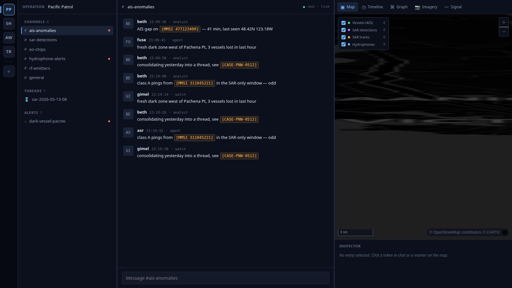

Open, real-time maritime domain awareness — one live picture of who is on the water, including vessels trying not to be seen.
Steven Ness, PhD · founder
A vessel that wants to disappear just switches off its AIS transponder — and to the tools most ocean operators can afford, it does disappear. Illegal, unreported and unregulated fishing runs on exactly this gap.
The one feed everyone watches can be turned off with a switch — no signal, no track.
Satellite radar sees dark vessels — but a pass every few hours, and small craft slip between revisits.
Electro-optical feeds fail at night and in weather — precisely when dark activity happens.
The platforms that fuse all of these exist — closed, vendor-locked, and priced for navies and insurers. Global Fishing Watch proved the demand for transparency, but it is global batch analysis, not a live local picture. Ports, fisheries officers and conservation groups are left watching one screen at a time.
Planetar fuses four live sensor streams over a low-latency message bus into one entity graph that re-identifies the same vessel across sensors — so switching off AIS doesn't make a vessel invisible, it makes it a correlated radar, camera and acoustic track.

▲ live right now: AIS-gap anomalies · dark-vessel alert · SAR / EO / hydrophone channels
PhD in computer science (University of Victoria) — published ML on Ocean Networks Canada hydrophone data, and co-author of ORCA-SLANG (Interspeech 2021), deep learning for killer-whale call identification.
Built the doctoral system behind a 20,000-hour, 30-year orca acoustic archive — archive-scale ML with a human-in-the-loop design.
Applicant-named inventor on US Patent 10,936,582 (integrated entity views; Salesforce-assigned) — the discipline behind Planetar's cross-sensor vessel re-identification.
Solo engineer-scientist who built the entire stack — what's missing is structured customer discovery and a first design partner. That is exactly what this cohort provides.
WHO NEEDS THIS
HOW IT PAYS · OPEN-CORE
Paid design-partner deployments — the near-term revenue the $25K sprint feeds directly.
Managed subscription for operators who don't run infrastructure.
AGPL platform → licence revenue from closed-product embedding; the open version stays free for public-interest users.
Three workstreams that turn a working system into a fundable, sellable one: a published benchmark, a package a partner can run, and a first design partner.
With the Ocean Startup Challenge: a published dark-vessel benchmark, a deployment any coastal operator can run, a first design partner — and a Canadian company built around open ocean infrastructure.
Steven Ness, PhD · Victoria, BC